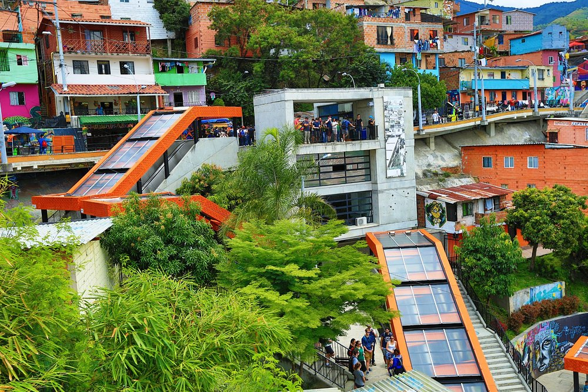

Recorridos Ofertados
Ruta N
Su propósito es consolidar a Medellín como el epicentro global de CTI + E acelerando su desarrollo económico y social. En noviembre de 2009 se constituyó legalmente la Corporación Ruta N Medellín, formada por Empresas Públicas de Medellín (EPM), UNE Telecomunicaciones y el Municipio de Medellín, con una estrategia de ciudad basada en la innovación y el desarrollo tecnológico para potenciar la competitividad de Medellín.

Comuna 13
La Comuna 13 de Medellín, un ejemplo de transformación social, es famosa por sus vibrantes grafitis, escaleras eléctricas al aire libre y la resiliencia de su gente. Un tour por sus calles ofrece una perspectiva única de la cultura urbana y la historia de la ciudad.